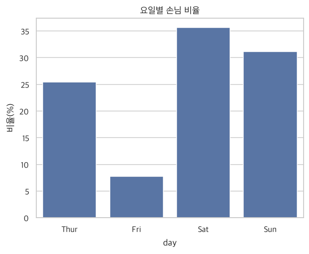
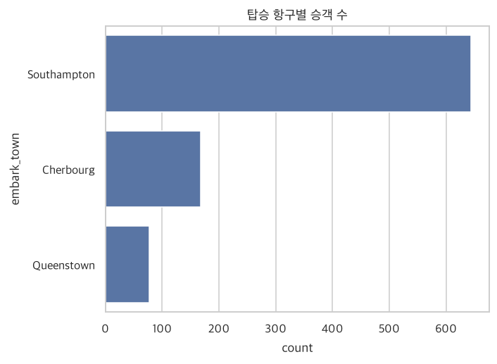
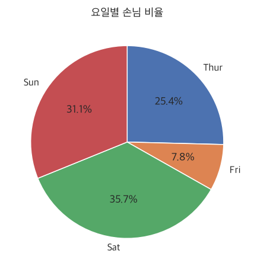
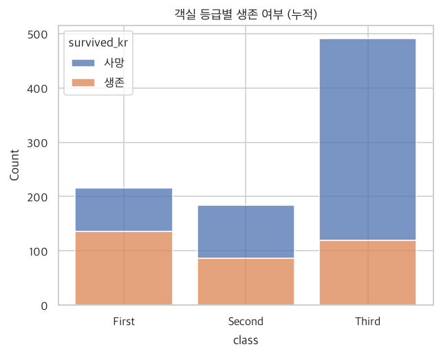
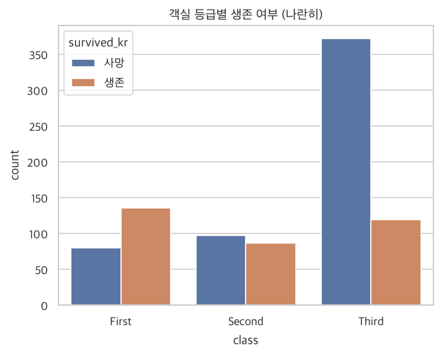
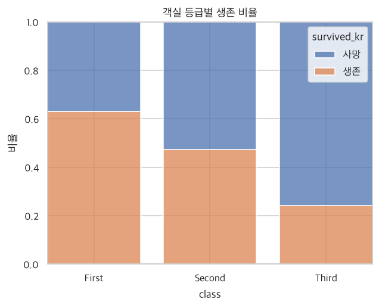
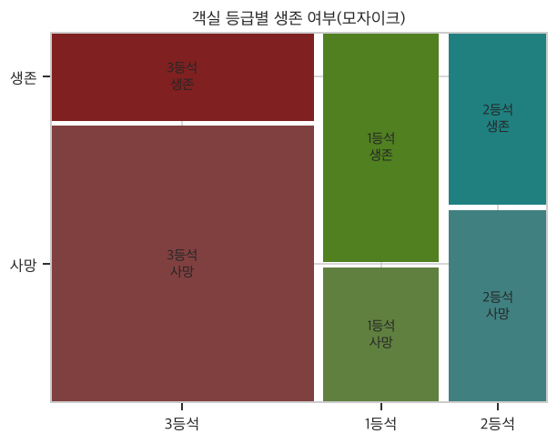
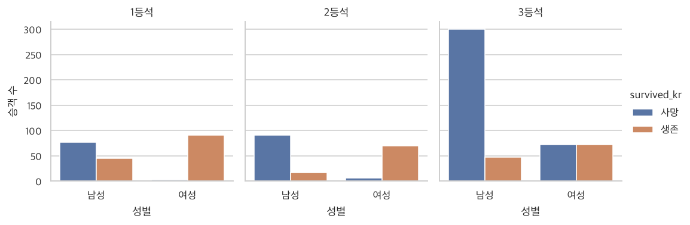

범주형 변수 기술통계
‘몇 명이나 되지?’를 세고 그림으로 그리기
- 범주형 변수의 도수(빈도)표와 상대도수표(비율)를 만들 수 있다.
- 막대그래프·원그래프를 그릴 수 있다.
- 두 범주형 변수의 교차표를 만들고 비율로 해석할 수 있다.
- 누적/나란한/100% 막대그래프, 모자이크 그림의 차이를 안다.
- 두 범주형 변수가 관련 있는지 카이제곱 검정으로 확인해 본다.
import pandas as pd
import numpy as np
import matplotlib.pyplot as plt
import seaborn as sns
import platform
sns.set_theme(style='whitegrid') # 그래프 기본 스타일 (이 줄을 먼저!)
# 그래프에서 한글이 깨지지 않게 하는 설정 (운영체제에 맞는 글꼴 선택)
plt.rcParams['font.family'] = {'Darwin': 'Apple SD Gothic Neo', 'Windows': 'Malgun Gothic'}.get(platform.system(), 'NanumGothic')
plt.rcParams['axes.unicode_minus'] = False # 마이너스(-) 기호 깨짐 방지
tips = pd.read_csv("data/tips.csv")
titanic = pd.read_csv("data/titanic.csv")
# 요일/객실 등급은 순서를 정해 두면 표와 그래프가 읽기 편해집니다
tips["day"] = pd.Categorical(tips["day"], ["Thur", "Fri", "Sat", "Sun"], ordered=True)
titanic["class"] = pd.Categorical(titanic["class"], ["First", "Second", "Third"], ordered=True)
titanic["survived_kr"] = titanic["survived"].map({0: "사망", 1: "생존"}) # 0/1을 알아보기 쉬운 글자로
titanic["sex_kr"] = titanic["sex"].map({"male": "남성", "female": "여성"})
titanic["class_kr"] = titanic["class"].map({"First": "1등석", "Second": "2등석", "Third": "3등석"})
3.1 한 범주형 변수의 분포 분석
3.1.1 숫자로 요약하기: 도수표와 상대도수표
반 친구들에게 “좋아하는 과일에 손 드세요”라고 했을 때, 사과 12명, 바나나 8명처럼 손 든 사람 수를 그대로 세면 도수(빈도)표, 전체 20명 중 사과 60%, 바나나 40%처럼 비율로 바꾸면 상대도수표입니다. 도수는 ‘몇 명’, 상대도수는 ‘몇 %’예요.
value_counts()는 범주별로 몇 번 나왔는지 세어 줍니다. 요일별 손님 수를 세어 볼까요?
tips["day"].value_counts().sort_index() # 도수표 (sort_index: 우리가 정한 순서로 정렬)
| count | |
|---|---|
| day | |
| Thur | 62 |
| Fri | 19 |
| Sat | 87 |
| Sun | 76 |
normalize=True를 붙이면 비율(0~1)로 계산해 줍니다. 100을 곱하고 round()로 반올림하면 퍼센트가 됩니다.
freq = tips["day"].value_counts().sort_index()
rel = tips["day"].value_counts(normalize=True).sort_index()
# 도수표와 상대도수표를 한 표로 합치기
pd.DataFrame({"도수(명)": freq, "비율(%)": (rel * 100).round(1)})
| 도수(명) | 비율(%) | |
|---|---|---|
| day | ||
| Thur | 62 | 25.4 |
| Fri | 19 | 7.8 |
| Sat | 87 | 35.7 |
| Sun | 76 | 31.1 |
table() → value_counts(), proportions() → normalize=True 옵션, xtabs(~변수, data=) → value_counts() 또는 pd.crosstab()에 해당합니다.
3.1.2 그래프로 요약하기: 막대그래프
막대그래프는 범주별 도수를 막대 높이로 보여 줍니다. 막대 사이가 떨어져 있는 것은 ‘서로 다른 칸(범주)’이라는 뜻입니다.
sns.countplot(data=tips, x="day") # x축: 요일, 막대 높이: 개수
plt.title("요일별 손님 수")
plt.xlabel("요일"); plt.ylabel("손님 수(팀)")
plt.show()
비율로 보고 싶다면 stat="percent"를 지정합니다.
sns.countplot(data=tips, x="day", stat="percent")
plt.title("요일별 손님 비율")
plt.ylabel("비율(%)")
plt.show()

범주 이름이 길면 가로로 눕히는 것이 읽기 좋습니다. x 대신 y에 변수를 넣으면 됩니다. 또 많은 순서대로 정렬하면 한눈에 순위가 보입니다. (order에 순서를 넣습니다.)
order = titanic["embark_town"].value_counts().index # 많은 순서대로 이름 뽑기
sns.countplot(data=titanic, y="embark_town", order=order)
plt.title("탑승 항구별 승객 수")
plt.show()

순서가 없는 명목형 변수(항구, 지역 등)는 많은 순으로 정렬하면 보기 좋고, 순서가 있는 변수(학년, 요일)는 원래 순서를 지켜야 합니다.
3.1.3 원그래프(파이차트)
원그래프는 피자 한 판을 나눈 모양입니다. ‘전체에서 각 조각이 차지하는 몫’을 보여 주기에는 좋지만, 조각이 비슷비슷하면 어느 쪽이 큰지 구별하기 어렵습니다. 그래서 통계에서는 보통 막대그래프를 더 권장합니다.
counts = tips["day"].value_counts().sort_index()
plt.pie(counts, labels=counts.index, autopct="%.1f%%", startangle=90, counterclock=False)
plt.title("요일별 손님 비율")
plt.show()

3.2 둘 이상의 범주형 변수의 상관성 분석
이제 두 변수가 서로 관련이 있는지 살펴봅니다. 예를 들어 “성별에 따라 생존율이 다를까?” 같은 질문입니다.
3.2.1 교차표(분할표)
교차표는 학교 시간표와 비슷합니다. 가로축(월~금)과 세로축(1~7교시)이 만나는 칸에 과목이 적혀 있죠. 교차표도 가로축은 한 변수, 세로축은 다른 변수의 범주이고, 두 조건을 동시에 만족하는 사람 수가 칸에 들어갑니다. (예: 남성이면서 사망한 사람 수)
ct = pd.crosstab(titanic["sex_kr"], titanic["survived_kr"]) # 행: 성별, 열: 생존 여부
ct
| survived_kr | 사망 | 생존 |
|---|---|---|
| sex_kr | ||
| 남성 | 468 | 109 |
| 여성 | 81 | 233 |
margins=True를 붙이면 가로·세로 합계(주변 합)가 생깁니다.
pd.crosstab(titanic["sex_kr"], titanic["survived_kr"], margins=True, margins_name="합계")
| survived_kr | 사망 | 생존 | 합계 |
|---|---|---|---|
| sex_kr | |||
| 남성 | 468 | 109 | 577 |
| 여성 | 81 | 233 | 314 |
| 합계 | 549 | 342 | 891 |
그런데 위 표만 봐서는 “남성이 더 많이 죽었다”고 말하기 어렵습니다. 남성 승객 자체가 훨씬 많기 때문이죠. 그래서 비율로 바꿔 봐야 합니다. normalize 옵션이 핵심입니다.
| 옵션 | 뜻 | 읽는 법 |
|---|---|---|
normalize="index" | 행 합계를 100%로 | “남성 중 몇 %가 생존?” (각 행의 합 = 100%) |
normalize="columns" | 열 합계를 100%로 | “생존자 중 몇 %가 남성?” (각 열의 합 = 100%) |
normalize=True | 전체 합계를 100%로 | “전체 승객 중 몇 %가 여성이면서 생존?” |
(pd.crosstab(titanic["sex_kr"], titanic["survived_kr"], normalize="index") * 100).round(1)
| survived_kr | 사망 | 생존 |
|---|---|---|
| sex_kr | ||
| 남성 | 81.1 | 18.9 |
| 여성 | 25.8 | 74.2 |
학교 두 곳의 급식 만족도를 비교한다고 합시다. A학교 1000명 중 300명, B학교 100명 중 50명이 만족했습니다. ‘사람 수’만 보면 A가 많지만, 비율은 A 30%, B 50%로 B가 높죠. 모집단 크기가 다르면 개수가 아니라 비율로 비교해야 공정합니다.
어느 방향으로 100%를 맞추느냐(행 기준/열 기준)에 따라 의미가 전혀 달라집니다. ‘비교하고 싶은 그룹’이 행에 오게 하고 normalize="index"를 쓰면 가장 자연스럽습니다.
3.2.2 3차원 교차표
변수를 세 개 이상 넣을 수도 있습니다. 행이나 열에 리스트([ ])로 여러 변수를 넣으면 됩니다. 객실 등급별로 성별×생존을 한꺼번에 봅니다.
pd.crosstab([titanic["class"], titanic["sex_kr"]], titanic["survived_kr"])
| survived_kr | 사망 | 생존 | |
|---|---|---|---|
| class | sex_kr | ||
| First | 남성 | 77 | 45 |
| 여성 | 3 | 91 | |
| Second | 남성 | 91 | 17 |
| 여성 | 6 | 70 | |
| Third | 남성 | 300 | 47 |
| 여성 | 72 | 72 |
행이 ‘등급 → 성별’로 계층을 이루고 있습니다. 1등석 여성의 사망자가 매우 적고, 3등석 남성의 사망자가 많다는 점이 숫자만 봐도 느껴집니다.
3.2.3 그래프로 요약하기
교차표를 그림으로 그리는 방법은 세 가지입니다. 같은 데이터를 어떻게 쌓느냐에 따라 눈에 들어오는 정보가 다릅니다.
학생 수를 성별로 나눠 막대에 표시한다고 상상해 보세요. 누적막대는 남녀를 ‘쌓은 블록’처럼 위로 올리고, 나란한 막대는 남녀를 ‘옆에 나란히 세워’ 높이를 직접 비교하며, 100% 막대는 모든 막대를 같은 높이로 맞춰서 ‘구성 비율’만 비교하게 합니다.
① 누적 막대그래프
sns.histplot(data=titanic, x="class", hue="survived_kr", multiple="stack", shrink=0.8)
plt.title("객실 등급별 생존 여부 (누적)")
plt.show()

② 나란한 막대그래프
sns.countplot(data=titanic, x="class", hue="survived_kr") # hue: 색깔로 구분할 변수
plt.title("객실 등급별 생존 여부 (나란히)")
plt.show()

③ 100% 막대그래프 (비율 비교)
sns.histplot(data=titanic, x="class", hue="survived_kr", multiple="fill", shrink=0.8)
plt.title("객실 등급별 생존 비율")
plt.ylabel("비율")
plt.show()

그래프 ③을 보면 등급이 높을수록 생존 비율이 높습니다. 전체 인원수 차이를 없애고 비율만 비교했기 때문에 ‘관계’가 가장 뚜렷하게 보입니다.
| 그래프 | 잘 보이는 것 | 단점 |
|---|---|---|
| 누적 | 전체 크기 + 구성 | 위쪽 조각의 크기를 비교하기 어려움 |
| 나란히 | 칸마다 개수 직접 비교 | 그룹별 전체 크기가 다르면 비율 비교는 어려움 |
| 100% 막대 | 그룹별 비율 비교 | 전체 인원수 정보가 사라짐 |
④ 모자이크 그림
모자이크 그림은 초콜릿 바를 쪼갠 모양입니다. 가로 폭은 ‘그 그룹의 사람 수’, 세로 높이는 ‘그룹 안의 비율’을 나타내서, 한 장에 개수와 비율을 모두 보여 줍니다. 100% 막대의 단점(인원수 정보 소실)을 보완하죠.
from statsmodels.graphics.mosaicplot import mosaic
mosaic(titanic, ["class_kr", "survived_kr"], title="객실 등급별 생존 여부(모자이크)", gap=0.02)
plt.show()

R의 vcd::mosaic()은 파이썬에서 statsmodels.graphics.mosaicplot.mosaic()으로 그릴 수 있습니다.
3.3 사례 연구
3.3.1 사례 1: 성별에 따라 생존율이 다를까? (원본 교재의 관절염 임상시험 사례를 대체)
원본 교재는 ‘치료 방법(처방/위약)에 따라 관절염 개선 정도가 다른가’를 다룹니다. 구조는 똑같이 “그룹(원인) × 결과”의 두 범주형 변수입니다. 여기서는 “성별(그룹) × 생존 여부(결과)”로 연습합니다.
ct = pd.crosstab(titanic["sex_kr"], titanic["survived_kr"])
print(ct)
print()
print((ct.div(ct.sum(axis=1), axis=0) * 100).round(1)) # 행 합계로 나누기 = 행 기준 비율
survived_kr 사망 생존 sex_kr 남성 468 109 여성 81 233 survived_kr 사망 생존 sex_kr 남성 81.1 18.9 여성 25.8 74.2
여성의 생존율은 약 74%, 남성은 약 19%로 차이가 매우 큽니다. 그런데 이 차이가 우연일까요, 진짜 차이일까요? 이를 확인하는 것이 카이제곱 검정입니다.
동전을 100번 던졌을 때 앞면이 50번이 아니라 53번 나왔다고 ‘이 동전은 조작됐다!’라고 하진 않죠. 우연히 생길 수 있는 흔들림이니까요. 하지만 90번 나온다면 우연이라고 보기 어렵습니다. 카이제곱 검정은 “성별과 생존이 아무 관계가 없다면 나왔을 법한 표(기대 도수)”와 “실제로 관측된 표”를 비교해서, 둘이 우연으로 설명할 수 없을 만큼 다른지를 p-값으로 알려 줍니다.
from scipy.stats import chi2_contingency
chi2, p, dof, expected = chi2_contingency(ct)
print(f"카이제곱 통계량 = {chi2:.2f}")
print(f"p-값 = {p:.3g}")
print("\n[관계가 없다고 가정했을 때의 기대 도수]")
print(pd.DataFrame(expected, index=ct.index, columns=ct.columns).round(1))
카이제곱 통계량 = 260.72 p-값 = 1.2e-58 [관계가 없다고 가정했을 때의 기대 도수] survived_kr 사망 생존 sex_kr 남성 355.5 221.5 여성 193.5 120.5
p-값 읽는 법(초보자용): “두 변수가 아무 관계 없다고 가정했을 때, 이 정도(이상)로 차이가 날 확률”입니다. 보통 0.05보다 작으면 ‘우연이라 보기 어렵다 = 관계가 있다’고 판단합니다. 여기서는 p-값이 0.05보다 훨씬 작으므로, 성별과 생존 여부는 관련이 있다고 결론 내립니다.
‘관련이 있다’는 것이 ‘성별이 생존의 원인이다’라는 뜻은 아닙니다. 당시 ‘여성과 어린이 먼저’ 구명보트 정책이 있었다는 배경이 있었기 때문이죠. 연관성과 인과관계는 구분해야 합니다.
3.3.2 사례 2: 이미 ‘집계된’ 데이터 다루기 (원본 교재의 이혼·사회계층 사례를 대체)
지금까지는 승객 한 명이 한 행인 원자료(raw data)를 썼습니다. 하지만 실무에서는 아래처럼 이미 개수가 세어진(요약된) 표를 받기도 합니다. 이때는 개수가 들어 있는 열(Freq)을 따로 사용해야 합니다.
설문 응답지 1,000장(원자료) vs 누군가 정리해 준 집계표 “A 답변 600, B 답변 400”(요약 자료). 후자는 한 줄이 한 사람이 아니라 ‘몇 명’이라는 숫자를 품고 있습니다. 그래서 그 숫자 열을 기준으로 다시 계산해야 해요.
# 원자료를 일부러 요약 자료로 만들어 봅니다 (groupby: 그룹별로 묶기, size: 개수 세기)
summary = (titanic.groupby(["class_kr", "sex_kr", "survived_kr"], observed=True)
.size().reset_index(name="Freq"))
summary
| class_kr | sex_kr | survived_kr | Freq | |
|---|---|---|---|---|
| 0 | 1등석 | 남성 | 사망 | 77 |
| 1 | 1등석 | 남성 | 생존 | 45 |
| 2 | 1등석 | 여성 | 사망 | 3 |
| 3 | 1등석 | 여성 | 생존 | 91 |
| 4 | 2등석 | 남성 | 사망 | 91 |
| 5 | 2등석 | 남성 | 생존 | 17 |
| 6 | 2등석 | 여성 | 사망 | 6 |
| 7 | 2등석 | 여성 | 생존 | 70 |
| 8 | 3등석 | 남성 | 사망 | 300 |
| 9 | 3등석 | 남성 | 생존 | 47 |
| 10 | 3등석 | 여성 | 사망 | 72 |
| 11 | 3등석 | 여성 | 생존 | 72 |
교차표를 만들 때는 values(합칠 숫자 열)와 aggfunc="sum"(합계)을 지정합니다.
pd.crosstab(summary["sex_kr"], summary["survived_kr"], values=summary["Freq"], aggfunc="sum")
| survived_kr | 사망 | 생존 |
|---|---|---|
| sex_kr | ||
| 남성 | 468 | 109 |
| 여성 | 81 | 233 |
그래프도 마찬가지로, ‘행을 세어서’ 그리는 countplot 대신 이미 있는 숫자를 막대 높이로 쓰는 barplot을 사용합니다. 여기서는 등급별로 칸을 나누어 성별·생존을 비교해 봅니다.
g = sns.catplot(data=summary, x="sex_kr", y="Freq", hue="survived_kr",
kind="bar", col="class_kr", estimator="sum", errorbar=None, height=3.6, aspect=0.9)
g.set_axis_labels("성별", "승객 수")
g.set_titles("{col_name}")
plt.show()

R의 xtabs(Freq ~ var1 + var2) + geom_col()이 파이썬에서는 pd.crosstab(..., values=Freq, aggfunc="sum") + sns.barplot()(또는 plt.bar)에 해당합니다. 층별 분석은 col=(그래프 나누기) 또는 df[df.조건](데이터 걸러내기)으로 합니다.
특정 조건만 걸러서 보고 싶다면 불리언 인덱싱(조건으로 행 고르기)을 씁니다. R xtabs의 subset 옵션과 같은 역할입니다.
only_third = titanic[titanic["class"] == "Third"] # 3등석 승객만
(pd.crosstab(only_third["sex_kr"], only_third["survived_kr"], normalize="index") * 100).round(1)
| survived_kr | 사망 | 생존 |
|---|---|---|
| sex_kr | ||
| 남성 | 86.5 | 13.5 |
| 여성 | 50.0 | 50.0 |
요약: R ↔ 파이썬 대응표
| 하고 싶은 일 | R | 파이썬 |
|---|---|---|
| 도수표 | table(x) | df["x"].value_counts() |
| 상대도수표 | proportions(table(x)) | value_counts(normalize=True) |
| 교차표 | xtabs(~a+b, data) | pd.crosstab(df.a, df.b) |
| 합계 추가 | addmargins() | crosstab(..., margins=True) |
| 행 기준 비율 | proportions(t, 1) | crosstab(..., normalize="index") |
| 막대그래프 | geom_bar() | sns.countplot() |
| 누적/나란히/100% | position=stack/dodge/fill | histplot(multiple=stack/fill) / countplot(hue=) |
| 모자이크 그림 | vcd::mosaic() | statsmodels … mosaic() |
| 카이제곱 검정 | chisq.test() | scipy.stats.chi2_contingency() |